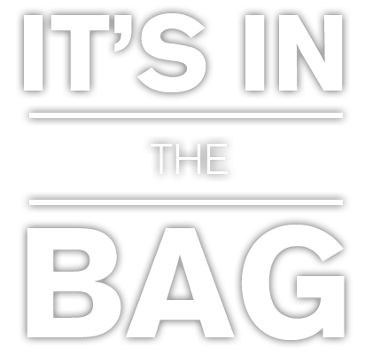
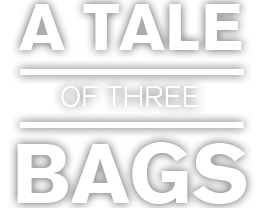
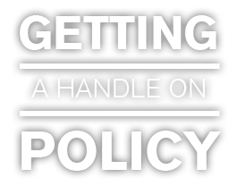
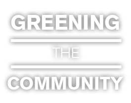

Story by: Julie Kliegman, Nicki Koetting,
Alex Kane Rudansky and Alexis N. Sanchez
Photography by: Julie Kliegman
Each year, an estimated 500 billion to 1 trillion plastic bags are consumed worldwide. That's more than one million plastic bags used per minute.
It ends with a choice: paper, plastic or "I brought my own, thanks." Every time a consumer checks out at the grocery store, a bag is already near the end of its life cycle--but every part of their manufacturing processes vary greatly, and environmental advocates argue that consumers should consider not just the end "use" stage, but how those bags came into being.
So how does a bag eventually end up in a consumer's hand after they check out?
Paper bags have the simplest manufacturing process, but cause more of an immediate impact on the environment since they require an immediate supply of wood or paper.
Most paper grocery bags use recycled paper, although some manufacturers use fresh paper pulp made from tree shavings. Still, whether made from recycled paper or fresh shavings, paper pulp has to be debarked or de-inked and cleaned several times to achieve a cleaner, more uniform color.
After the cleaning process, paper pulp is drained and compressed into thin sheets by paper-making machines. These sheets are cut into appropriate sizes, then folded and glued together to create a final product.
Batches of these bags are delivered by truck to local grocery stores for a final manufacturing process of about 10 cents per bag. According to the Illinois Retail Merchant Association, this is 10 times the manufacturing cost of producing a plastic bag. However, environmental costs--litter cleanup, ecological damage, and landfill space--are transferred to taxpayers in the long term, and potentially make a plastic bag more expensive.
Plastic bags have a more complicated manufacturing process, mostly because there are multiple types of plastic used by manufacturers.
Plastic is composed of polymers, or large molecules of repeating units called monomers. For plastic grocery bags, these polymers are repeating units of ethylene. The chains, called polyethylene, are basically a bunch of carbon atoms bonded with pairs of hydrogen atoms.
Manufacturers can use one of three types of polyethylene polymers to create plastic bags: high-density polyethylene (HDPE), low-density polyethylene (LDPE) or linear low-density polyethylene (LLDPE). The main difference between these types is the strength and transparency of the plastic. LDPE has the lowest tensile strength and is the type of bag used by dry cleaners to cover clothes. HDPE and LLDPE are stronger materials and are used in grocery bags and thick mall shopping bags, respectively.
At the very beginning of the manufacturing process, plastic bags begin as crude oil, natural gas or some other form of petrochemical. The material is then transformed into a resin by a machine that heats and extrudes the plastic until it achieves a tubular shape. After the plastic cools, it is flattened, sealed, punched and printed on.
The end result is shipped to grocery stores for a total manufacturing cost of just over one cent per bag.
Sustainable bags do not have any single manufacturing process, since they can come in many different forms. Although manufacturing processes and cost-per-bag differs greatly among these options, the aim of each sustainable bag is to maintain a balance between a large number of uses--how long the consumer keeps it around uses it instead of a plastic or paper bag--and the least impact on the planet.
Cotton bags use plant fibers usually grown organically without chemical pesticides, fertilizers or herbicides. The cotton can also come from reclaimed post-industrial sources that are typically about to be sent to a landfill.
Hemp, which is usually used to create rope, is often used as a stronger alternative to cotton bags. It also requires less water and chemicals during the manufacturing process.
Many sustainable bags--usually those readily available for purchase at corporate grocery stores like Whole Foods--are made of polyethylene terephthalate (PETE). PETE is a common polymer resin found in beverage, food and other liquid containers, that gets mixed with cotton to form a smoother final product. It is usually preferred for its ability to withstand screen-printing.
Another polymer-based sustainable bag is non-woven polypropylene (NWPP). NWPP is petroleum-based polymer resin that feels more fabric-like than PETE. NWPP is often used in packaging and textiles, but can also be purchased at many grocery stores.
Neoprene is the last of the most commonly used sustainable bag materials, and is also often used for laptop cases. By far the sturdiest material of the bunch, neoprene is a synthetic rubber usually found in wet suits, and is preferred for its ability to insulate and withstand machine-washing.
The cost-per-bag of each of these sustainable products averages to about several dollars per unit. This explains the high prices they sell for at grocery stores and pharmacies. However, each bag can last for several years and a few hundred grocery store trips. Their plastic and paper bag counterparts, meanwhile, only survive for a maximum of a few months.
Several manufacturing processes later, we have come full circle, and it ends with a choice: paper, plastic or sustainable?

“Environmentally-friendly.”
“100 percent green.”
“Made from 100 percent compostable material.”
It’s easy to jump on the “green” bandwagon with the barrage of “go green” slogans on sustainable bags out there.
But just how sustainable are those sustainable bags?
Not as sustainable as one might think.
Factors such as production energy, recycling infrastructure and consumer use contribute to the environmental impact of plastic, paper and sustainable bags.
In the U.S., the recycling rate of single-use plastic bags is about 5 percent, according to a 2011 study by the Institute for Sustainable Development at the California State University Chico Research Foundation. Reusable polyethylene and polypropylene bags have a similar rate of recycling, largely because there is a lack of a recycling infrastructure for those materials.
Paper bags are by far the worst for the environment out of the three popular options. Paper bags consume more than three times as much energy to produce as plastic bags, according to a 2012 study by the National Center for Policy Analysis. Plastic bags generate 39 percent less greenhouse gas emissions than uncomposted paper bags and 68 percent less emissions than composted paper bags.
More than 16 plastic bags can be created for every paper bag using the same amount of water. Plastic bags consume 71 percent less energy during production than paper bags and paper bags generate almost five times the amount of solid waste.
Reusable bags are petri dishes for bacteria because of the groceries they hold. This requires them to be washed and therefore increases their environmental impact because of water use.
Also adding to the environmental impact of reusable bags are their production origins. While most plastic bags are manufactured domestically, most reusable bags are produced outside the U.S., according to the National Center for Policy Analysis report. These bags are then transported to the U.S. by gas-guzzling cargo ships, producing a bigger footprint on the environment.
The real problem with reusable bags lies in the fact that very few consumers actually use them, according to a 2009 study by Boustead Consulting and Associates.
“Reusable bags may be the preferred alternative, but in reality, there is no evidence that most, or even a majority of, customers will reliably bring reusable bags each time they go shopping,” the study reads.
Each year, an estimated 500 billion to 1 trillion plastic bags are consumed worldwide. That's more than one million plastic bags used per minute.
Plastic bags, first introduced in 1977, now account for four out of every five bags handed out at grocery stores.
Less than 5 percent of plastic grocery bags are recycled in the U.S.
The U.S. alone uses about 12 million barrels of oil every year just to keep up with the demand for plastic bags.
The US will cut down 14 million trees each year to satisfy our demand for paper grocery bags.

Going green has been popularized for consumers in the form of ditching the paper and plastic bags, but the City of Evanston has not not followed suit. Back in 2010, a reusable bag ordinance was up for debate for the city council. Ultimately, despite Evanston’s track record of implementing green initiatives, the legislation was scrapped.
“If I were to say, what's the most cost effective thing to do to really have an impact, it would not be pursuing a bag product,” says Catherine Hurley, the city's sustainable programs coordinator. “It would be reducing energy usage.”
In a way, Evanston’s focus on energy usage, which takes the form of monitoring vehicle emissions, bucks the trend of cities nationwide. With Californians leading the way, many city governments have implemented one of two types of bag legislation.
Bag bans prohibit outright the use of plastic bags. Bag fees, on the other hand, tax local consumers small amounts--usually a few cents or so--to continue using plastic bags, as opposed to reusable or paper bags. It’s important to note that although it’s been proven that paper bags are worse for the environment, legislation typically targets plastic.
Number of U.S. Cities with Sustainable Bag Ordinances by Year
See legislation in place designed to promote the use of sustainable bags and limit the use of plastic bags. This includes all ordinances currently in place on a local level and ones projected to go into effect later in 2013. "Cities" also includes townships, villages and municipalities. Source: Bag Monster
Eleanor Revelle, president of Citizens’ Greener Evanston, suggests that concern among citizens for sustainable bag use may be tied to convenience rather than actual impact.
“In a way, it’s an easy thing for people to do,” she says. “That’s a lot easier than getting out of their private automobile and taking public transportation, which will have a much bigger impact.”
A change like that requires what Revelle referred to as a “bigger behavior change.” In addition to community education about the environment, that change requires major improvements to public transit and better bike paths throughout the city, which have started to crop up in the last couple of years.
For places like Cupertino, Calif., sustainable bag usage is a higher priority. The city passed legislation going into effect this October that will impose a 10-cent fee on consumers for using plastic bags. The ordinance is in compliance with a California state law that calls for a 50 percent reduction of materials in landfills by 2014. Starting in 2015, the bag fee will increase to 25 cents, which follows suit with what neighboring cities have imposed.
“The city has embraced this,” says Alex Wykoff, Cupertino’s environmental programs specialist.
While some might be worried that a plastic bag policy would push Evanston consumers to shop in nearby towns, Cupertino won’t have that problem. About 70 cities in California, including many neighboring cities to Cupertino, have already implemented similar ordinances. That means Cupertino consumers who oppose the legislation can’t easily take their business elsewhere.
“The communities are separated by greater distances or are much larger,” Hurley says of California as compared to Illinois. “A lot of the businesses had a hard time being supportive because otherwise people would go a mile north and shop in Wilmette.”

When it comes to choosing the right bag, Northwestern University students have it covered. (Or at least, 49 of them do.)
From April 22 to May 5, 49 Northwestern students participated in the third annual No Impact Challenge and put their reusable bags to good use, shunning paper and plastic bags as well as all one-use disposable items.
The goal of the No Impact Challenge is to receive the least number of points possible. Every day for two weeks, students count a point for each disposable plate, cup, piece of cutlery, paper napkin, shopping bag, bottle, can and other unsustainable items they use, as well as a point for each time they purchase an item with unneeded plastic packaging. They log how many points they accrue every day. After two weeks the student who accumulates the least number of points wins.
The students have a monetary and an environmental, incentive to be more sustainable: The three winners receive a gift card to either the Blind Faith Café or Unicorn Café, both in Evanston.
No Impact Challenge co-leaders Alicia White and Zach Glasser say leading and participating in the challenge for the past three years has made them live more sustainable lives.
White says she always carries her reusable bags with her as well as a thermos, water bottle and a reusable spork. She just ordered a reusable coffee filter that is made out of cotton so that she doesn’t get points for using a paper coffee filter every day.
“The Challenge will add another layer of reminding me to do [sustainable] things,” White says.
Glasser also started carrying a reusable water bottle in his backpack after his first year of the No Impact Challenge, as well as buying items in bulk rather than individually.
In addition to hosting the No Impact Challenge every year, the Roosevelt Institute collaborates with the Environmental Campus Outreach (ECO) organization on the Bagless NU initiative, with the goal of reducing and eventually eliminating the use of plastic bags on the NU campus as well as in Evanston.
ECO worked with Sodexo and the Norris Bookstore to encourage students to bring their own bags and reduce the amount of plastic bags given to customers. ECO also collected plastic bags that are then recycled into sleeping mats for the homeless, said ECO President Madaline Goldstein.
As for choosing reusable bags over plastic and paper ones, Alicia White says that programs such as the No Impact Challenge serve as a reminder for Northwestern students to think about their impact on the environment.
“We’ve become a very disposable-oriented society and we have to really fight against that and really actively search out ways to avoid that,” White says.